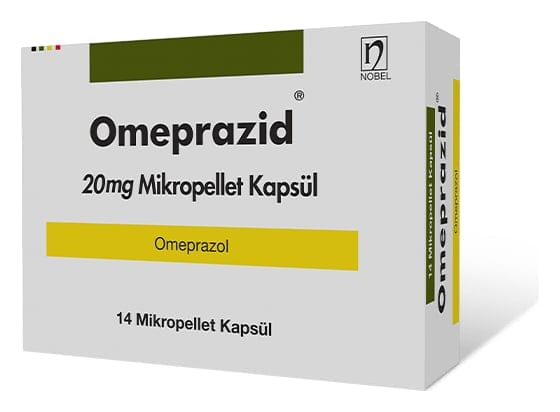

Omeprazid 20 mg Kapsül, 14 Adet

Ne için kullanılır
KT · Bölüm 1OMEPRAZİD etkin madde olarak omeprazol içerir. “Proton pompası inbibitörü” olarak bilinen ilaçlardan biridir. Midenizdeki asit oluşumunu azaltır. OMEPRAZİD koyu yeşil opak / sarı opak No.2 sert jelatin enterik kaplı mikropellet kapsüldür Kapsüller beyaz veya beyazımsı renkli, kokusuz ve tatsız küresel mikropelletler içermektedir. OMEPRAZİD 14 enterik kaplı mikropellet kapsül içeren blister ambalajlarda bulunmaktadır. OMEPRAZİD aşağıdaki durumların tedavisinde kullanılır: Yetişkinlerde:
e “Gastroözofajiyal reflü hastalığı” (GÖRH). Mide asidinin ağrı, iltihaplanma ve mide
yanmasına yol açacak şekilde yemek borusuna kaçışı. 1/9
e Bağırsakların üst kısmındaki ülserler (onikiparmak bağırsağı ülseri) ya da midedeki ülser (gastrik ülser).
e “Helicobacter pylori' adlı bakteri ile enfekte (iltihap oluşturan mikropların bulaştığı) ülserler. Eğer sizde böyle bir durum mevcutsa doktorunuz iltihabı tedavi etmek suretiyle ülseri iyileşmek için size ayrıca antibiyotik reçete edebilir.
e Nonsteroidal antiinflamatuvar ilaçlar (NSAİİ: Ağrı, ateş ve iltihaba karşı etkili ilaçlar) olarak isimlendirilen ilaçların sebep olduğu ülserler. Eğer NSAİİ alıyorsanız, oluşmadan ülseri durdurmak için OMEPRAZİD kullanılabilir.
e Pankreastaki büyümeye bağlı olarak midede aşırı asit olması durumunda (Zollinger- Ellison sendromu)
Çocuklarda: 1 yaş üzeri ve >10 kg çocuklarda:
e GÖRH: Mide asidinin ağrı, iltihaplanma ve mide yanmasına yol açacak şekilde yemek borusuna kaçışı,
Çocuklarda bu durumun belirtileri mide içeriğinin ağza geri dönmesi, kusma ve kilo artışında azalmayı içerebilir. 4 yaş üzeri çocuklar ve ergenlerde:
e “Helicobacter pylori? adlı bakteri ile enfekte ülserler. Eğer çocuğunuzda böyle bir durum varsa doktorunuz iltihabı tedavi etmek suretiyle ülseri iyileştirmek için ayrıca antibiyotik reçete edebilir.